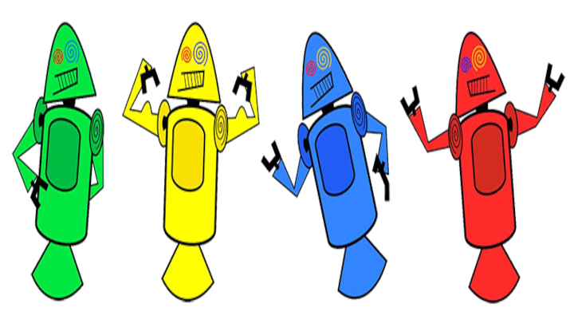

Veja alguns de nossos projetos.
2° Evolução do BugDroid
Esse segundo projeto, contamos a história do Bugdoid. Saiba Mais »
Nome da Empresa 3

Encontros online e oficinas para você vender mais e melho
Nome da Empresa 4
Encontros online e oficinas para você vender mais e melho
Nome da Empresa 5
Encontros online e oficinas para você vender mais e melho
Nome da Empresa 6
Encontros online e oficinas para você vender mais e melho
Nome da Empresa 7
Encontros online e oficinas para você vender mais e melho
Nome da Empresa 8
Encontros online e oficinas para você vender mais e melho